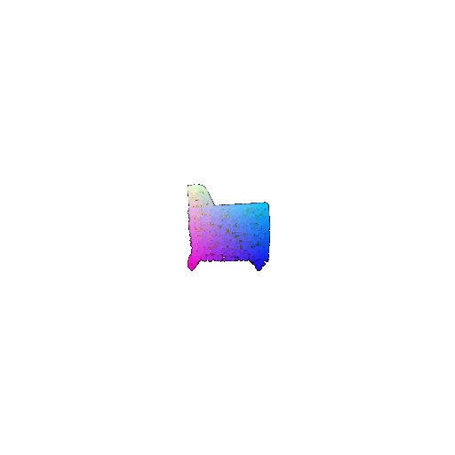

Name: Pratik Patel
U-ID: 118397054, pratik94
This is the report for assignment-2 for CMSC848F.
1. Exploring loss functions (15 points)
NOTE: Due to time-limitation, I could not upload visualization for Q1.
1.1. Fitting a voxel grid (5 points):
bceloss = torch.nn.BCEWithLogitsLoss()
loss = bceloss(voxel_src, voxel_tgt)
1.2. Fitting a point cloud (5 points)
```BASH
src2tgt = pytorch3d.ops.knn_points(point_cloud_src, point_cloud_tgt, K=1, norm=2)
tgt2src = pytorch3d.ops.knn_points(point_cloud_tgt, point_cloud_src, K=1, norm=2)
source2target_dist = src2tgt.dists[..., 0]
target2source_dist = tgt2src.dists[..., 0]
loss_chamfer = source2target_dist.mean() + target2source_dist.mean()
return loss_chamfer
```
1.3. Fitting a mesh (5 points)
loss_laplacian = mesh_laplacian_smoothing(mesh_src, method="uniform")
2. Reconstructing 3D from single view (85 points)
2.1. Image to voxel grid (20 points)
After 0 iterations:
Ground truth Voxel_grid after 0 iterationGround truth Voxel_grid after 0 iteration
2.2. Image to point cloud (20 points)
After 0 iterations:

Ground truth Point Cloud after 0 iterationoutput Point cloud after 0 iteration
After 500 iterations:
Ground truth Point Cloud after 500 iterationoutput Point cloud after 500 iteration
2.3. Image to mesh (20 points)
After 0 iterations:
Ground truth Mesh after 0 iterationoutput Mesh after 0 iteration
After 500 iterations:
Ground truth Mesh after 500 iterationoutput Mesh after 500 iteration
2.4. Quantitative comparisions(10 points):
Model Evaluations:


Unfortunaly Mesh model isn't working properly due to small number of iterations.
2.6. Interpret your model (10 points)
Deeper models doesn't always help. As you increase depth of MLP beyond certain level, the accuracy starts dropping.